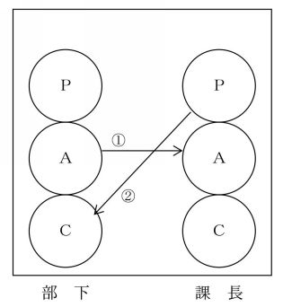
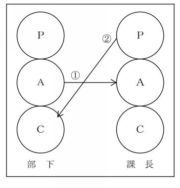

| 「マネジメントの真髄」シリーズ17(30巻予定): 成功する経営の原理 原則「人間心理・集団心理・組織強化・リーダーシップ」編 | |
| 冨澤 翕 | |
| UNKNOWN (2015) | |
マネジメントの真髄
シリー ズ 17
(そ の2) 「人間心理・集団心理・組織強化・リーダーシップ」編 No. 9
「これで、人は動く・組織は強くなる」
シリー ズ 1 7～ 1 8 も、
読者のご質問・ご要望にお応えした「追加の章」で す 。
シリーズ17
「人間心理・集団心理・組織強化・リーダーシップ」編 No.9 の 「目次」
第30章～31章：
心理学アプローチ ： TA (transactional analysi s ＝交流分 析) 抜 粋 ( シリー ズ 1 8 まで続きま す )
第 3 0 章 ： 気持ちの良い生産的な会 話 ― やり取り分 析 ―
第 3 1 章 ： より良い対人関係を築くに は ― ストロー ク ―
第 3 0 章
気持ちの良い生産的な会話
―やり取り分析―
１．やり取り分析とは何か
何度も説明したとおり、私達はそれぞれ自分なりの、、を持っている。
そして、非常に多くの場面で人とやり取りをしている訳であるが、その相手も、その人なりの、、を持っている。
さて、こ の3 つの自我状態を持っている私達が行っている 日常のやり取りを、 もっと気持ち良く、もっと効果的に、そしてもっと生産的に行う為にはどうすれば良いのか 。
この「やり取り分析」の狙いはそこにある。
ＴＡの開発者エリック・バーン博士は 、3 つの自我状態を持っている人間が、他の人間に話し掛けるとどういうことが起こるかに興味を持っていた。
そして、人間のやり取りをもっと科学的に分析する為には、何かの単位を用いなくてはならないと考えたのである。
何故なら、物理学を始めとして他の科学が発達して来たのは、物を計ったりする時に"単位"というものを使い、それによって物事を考えた為だと気が付いたからである。
そこで、バーン博士は、人間のやり取りを分析する単位として、図表１のように、ある人が刺激を与えると相手の人から反応が返って来るので、この刺激と反応を一つの単位とすることにした。
この やり取りのことを「トランザクション」 と言う。
［図表１］単位としてのやり取 り( トランザクション）
この結果、私達が行っているやり取りをとても分かりやすく説明することが出来るようになり、もつれたやり取りを分析して、それを気持ちの良い効果的で生産的なやり取りに直すことも可能としたのである。
それでは、バーン博士が見付けた幾つかの法則を紹介しよう。
２．やり取りの3つのタイプとコミュニケーションのルール
1 ) 期待されたやり取りのタイプ
Ａさん「この件に関するファイルはどこに仕舞ってありますか？」
Ｂさん「あそこのキャビネットの上から二段目です」 この場合のやり取りは、Ａさんのから、ごく普通の問
い掛けとしてＢさんに対してファイルの在り処を尋ね、Ｂさんからは、その場所についての答がから返って来ている。


 このやり取りを図に表してみると、Ａさんの からＢさんの へ、Ｂさんの からＡさんの へ、という具合に、矢印は平行に書き表せ
る(
図表２）。
このやり取りを図に表してみると、Ａさんの からＢさんの へ、Ｂさんの からＡさんの へ、という具合に、矢印は平行に書き表せ
る(
図表２）。
［図表２］相補的やり取り
このように、図に描き表した時に矢印が平行に引けるやり取りは、お互いの関係 が" 期待されたとおりの関 係" にあるやり取りだから、コミュニケーションはスムーズで、健全な人間関係の自然な秩序に従っている「気持ちの良いやり取り」と言える。
そして、このような関係にあるやり取りは、お互いが続かせようと思えばいつまでも続くという特徴を持っている。
このようなやり取りを 「相補的やり取り」 とも言う。
このケースのやり取りは言葉によって行れているやり取りの例であるが、やり取りは言葉が無くても行れる。
例えば、手術中に、医者が額の汗を拭わせながら隣にいる看護師に手を出すと看護師が必要なメスを渡す、などといった場合にもとのやり取りが行れていると言える。
また、期待されたやり取りは、何もとの間だけで行れるのでは無 い( 図表３参照）。
［図表３］期待されたやり取 り( 相補的やり取りの例）
２）気まずくストップするやり取り
2)気まずくストップするやり取り
部下「課長、この間の会議の報告を一応纏めましたのでご覧下さい」
課長「君の仕事はいつもちょっと遅いね。この報告書はもっと急ぐものだったんだよ」
このやり取りの場合をよく調べてみると、部下が課長に対してごく平静に話し出したにも拘らず、課長は批判的で部下に向かって応答している。
このやり取りを図に表してみると図 表4 のようにやり取りの矢印は交叉する。
［図 表4 ］交叉するやり取り

このようなやり取りを「 交叉的やり取り 」 と言い、 このようなやり取りではコミュニケーションはそこで中断 される。
職場や家庭で、「何か気まずいやり取りだったなあ」と思うような時を調べてみると、大体においてやり取りの矢印は交叉している筈である。
交叉的やり取りは、多くの場合、 対人関係の"障害の原因"となり易い性質を持っている 。
何故ならば、交叉的やり取りが起こるのは、やり取りを開始する人がある種の反応を期待して刺激を出したにも拘らず、その期待とは違った自我状態が作動され、予期に反し た( 不快 な) 答が返って来るというものだからである。
このような場合、やり取りを開始した人は何か裏切られた感じがしてしまい、「自分の存在を軽視されている」と感じてしまうことが多い。
こうなると、二人はお互いに引き下がって黙ってしまうか、そっぽを向いてしまうか、話題を転換して行くしか無い。
つまり、交叉的やり取りが起こると、コミュニケーションは、一時そこで中断された形になってしまうのである。
人が他意も無くごく普通に何気無く言ったことに対して、弁解がましい言い方をしたり、批判的なことを言ったり、全く別の切り口から意見を述べたりする人がいる。
だが、このような人達のやり取りは大体において交叉的になりがちで、相手の気持ちを気まずいものにし、話の出来ない雰囲気を作り出してしまうことが多いものであ る( 問題は、そのような反応をした当人が、交差的なやり取りをし、相手を不快にしていることに気付いていないことが多い、ということであ る) 。
職場だけでなく、恋人同士や夫婦間においても、 身近な存在であるが故に相手の気持ちに対して鈍感になっていて 、知らず知らずのうちにこのような状況を作り出して関係を悪くしていることがある。
図表 ５(ａ ) (ｂ) に、よく起こりがち な" 交叉的やり取 り" の例を示しておいた。
［図表 ５( ａ）］気まずくストップするやり取 り( 交叉的やり取 り) の例
［図表５(ｂ）］気まずくストップするやり取り(交叉的やり
取り)の例

しかし、時によっては交叉的なやり取りが必要な時もある。例えば、相手の話し掛けに乗らない方が良い場合とか、何
とはなしにダラダラと続いているような話を打ち切る場合などには、交叉的やり取りで打ち切って自分の意思をはっきり伝えることが必要である。
3)こじれ る 原 因 となるやり取り
店員「はい、こちらの方が遥かにお品は良いんですけれど
も、ご予算を大分オーバーしますので、ちょっ と... 」
お客「その高い方ので結構です。それを下さい」
このやり取りの場合を調べてみよ う( 図表 ６) 。
［図表６］
このやり取りを表面的に見ると、一見 ⇆ の平行 な( 相補的 な) やり取りのように見える。
ところが、よく考えて見ると店員の言葉の裏側には、無言のうちに態度や行動あるいは声の調子などで、別の意味のメッセージが伝達されている。
それを言葉で表すとすれば、「こちらの方が欲しくないんですか、欲しかったら買ってご覧なさい」とでも言えるであろうか。
老巧な店員は、長い経験で「この奥さんは負けん気で、自己中心的なチャイルドを持っている」と、直感的に判断して、そのチャイルドを刺激するような働き掛けを、意図的にを使って発している。
そして、このような店員から の" 隠され た" メッセージに、お客のチャイルドはコロリと乗せられている。
お客は、気持ちの上では「馬鹿にしないで！私にだって、これくらいの物は買えるのよ！」とばかり、「その高い方ので結構です。それを下さい」と、自分の予算も顧みずに買ってしまっている。
この関係を、無言のメッセージの部分まで含めて図示すると図 表7 のようになり、 こうしたやり取りを「隠されたやり取り」 と言う。
［図表７］隠されたやり取り
隠されたやり取りは、この例のようにいつでも表面的なや
り取りと並行して、 隠された心理的やり取 り( 裏面的やり取 り ) として行れるのである。
この例では、老巧な店員は商品の販売に成功しているが、いつもこのように上手く行くとは限らない。
むしろ、隠されたやり取りは、後 で" 隠された部 分" が表面化して問題をこじらせてしまうことの方が多いものである。
この例で言えば、お客の批判的を刺激してしまって、「取らぬ狸のナントヤラ」という仕儀に成り果てることもあり得る。
例えば、「なんて厭な感じでしょう。いかにも『あなたには無理でしょう』というような言い方をし て... 。もう買うのは止めておきます」というようなことにもなりかねない。
隠されたやり取りを、 軽々しくテクニックとして用いたりすると逆に信用を落とす ことにもなる。
私達は、人とのやり取りの場面で、 相手からの隠されたメッセージに気付く と同時に、 自分が無意識的に発信してい る" 隠されたやり取 り" に気付く必要がある 。
それには、自分や相手の 言葉 だけで無く 、 態度 や 気持 ち( 感 情) 、 行動 などからも「何を言おうとしているのか」 に気付かなければならないのである。
だが、その為には、日頃か ら " 自己洞察 力" を磨く 努力 や " 感受 性" を高める 努力を心掛ける必要がある。
なお、隠されたやり取 り" に は2 つのパターンがある。
その一つは 、 " 角度のある隠されたやり取 り" で、もう一つ は " 二重の隠されたやり取 り" である。
それらの例を示しておこ う( 図 表8 参照）。
［図表８］隠されたやり取り の2 つのパターン
３．気持ちの良い生産的な会話をするには
このような 、3 つのやり取りのパターンやそれぞれの法則を、実際のやり取りにどのようにして活用したら良いのであろうか。
例を挙げて、それを考えることにしよう。
1)交叉したやり取りを繋ぎ直すには
やり取りが交叉してしまう時は気まずい雰囲気になり、コミュニケーションが中断されてしまうことは、前に説明したとおりである。
では、交叉したやり取りは、どのように繋ぎ直したら良いであろう か( 図表９）。
前に挙げた 例( 図 表 9 ) で説明しよう。
部下「課長、この間の会議の報告を一応纏めましたのでご覧下さい」
課長「君の仕事はいつもちょっと遅いね。この報告書は、もっと急ぐものだったんだよ」
「図 表9」( 図 表4 と同 じ )

このような場合に大切なことは、先ず相手の反応に対して
相補的に繋ぎ直すことである。
例( 図 表 9 ) で言えば、課長の → に対して、部下の方から図 表 1 0 のように → (①) の反応をするのである。
例えば、「申し訳ありません。今後は期日に気を付けてやりますの で... 」といったような反応をするのである。
［図 表 1 0 ］
その後、図 表 1 0の② のように「ところで会議の報告書ですが、問題が無いかどうか、ご覧下さいませんか」といった具合に、 →（② ）の健全なやり取りに繋ぎ直して行くのである。
このように、 の自我状態を使って自分の自我状態を切り換えて行くことを 「オプション」 と言 う( いろいろな自我状態からの反応のうち、どれか一つを選んで行くこ と) 。
の自我状態は、前に説明したとおり、自分の中のやをコントロール出来る訳であるから、相手の自我状態の変化に合わせて相補的なやり取りをオプションして行くことは、日常の会話の中で訓練することによって幾らでも高めて行くことが出来る。
それを、「そうはおっしゃいますが、課長は期日をおっしゃられませんでしたし、急ぐともおっしゃいませんでしたの で... 」とやったのでは、気持ちの良い会話にもならないし、生産的な会話にもならず、良い人間関係を築くことも出来ない。
2)非生産的な会話を生産的なものにするには
接客場面などでよく起こることであるが、顔馴染のお客などが来て長々と非生産的な会話をしてしまうことがある。
こちらは忙しいにも拘らず、大切なお客だからという訳でついついお付き合いをしてしまうが、 こうしたやり取りを 「凍結したやり取り」 と言う（図 表 1 1 ）。
［図 表 1 1 ］
このよう な" 凍結したやり取 り" になってしまった場合に
は、どのようにしたら良いであろうか。
こうした時に も" オプショ ン" することが大切である。
先ず、「申し訳ございません、もっと楽しいお話を伺っていたいんですけれど 」※ というように、先ず、 → のやり取りを崩さないように相補的に繋いでおいて、「他のお客様がお待ちになっていらっしゃるようですので、また後ほどお話を伺わせて頂きたいと存じま す... 」といった具合に、 → のやり取りで交差させることによって話を打ち切ることが出来る。
※ この時に注意するべきことは、口先だけではダメだ、
ということ である。
つまり、 心を籠めてお詫びする姿 勢( 態 度) が必要 であ る( 「この時」だけではない が) 。
第 3 1 章
より良い対人関係を築くには
― ストロー ク ―
１．ストロークとは何か
これまでに、ＴＡ の4 つの分析の枠組みのうち の" 自我状態の分 析"と" やり取り分 析"の2 つについて話を進めて来た。
この章では、ＴＡの基本的前提であり、最も重要な考え方であ る" ストロー ク" について話をする。
人間の肉体は、栄養や睡眠や清潔を必要としている。
それらが無いと健康な状態で生きて行くことは出来ない。
人間の心もこれと同じ ことが言えて、 心の健康を促す為に は" 人との接触から得られる刺 激" が必要 である。
この、人との触れ合いが無いと人間は心のバランスを失ってしまって、心身の健康を保つことが難しくなってしまうのである。
※ 巻末の＜参考＞「セク・ハラ...等に関連して」を参照。
私達が社会的な生活をする上で、 人との接触から得られる刺激を「ストローク」 と呼ぶ 。
「ストローク」という言葉の意味は、日本語に直訳する と" 撫で る " " さす る " " 愛撫す る" などの意味があるが、 ＴＡでは 、 " ある 人( 他の 人) の存在を認める為の行動や働き掛 け" であると定義付けられている。
私達はみんな、赤ちゃんの時から、抱かれたり、あやされたり、愛撫されたりして、ストロークを受けて育って来た。
ちょっと考えると、こうした優しいタッチが無くても赤ちゃんは育つのではないか、と思われるかもしれないが、実はそうでは無く、これらのストロークが私達の神経系統の適切な刺激となって心身の発達を促進して来ているのである。
ＴＡの開発者、エリック・バーン博士は、「幼児に十分なストロークが与えられないと、その子の脊髄は萎縮してしまい、肉体的にも情緒的・精神的にも成長が遅れてしまう」と言ってい る( 具体的な例を後で示 す) 。
社会的な種属である人間には、生まれた時から肉体的な接触の欲求があると考えられるのである。
さて、子供は成長するにつれて言葉を覚え、言葉を使って生活が出来るようになって行く。
そうすると、幼児の時 の" 肉体的な接触の欲 求" は、次第に言葉や笑顔などによって「お前の存在をちゃんと認めていますよ」という刺激を受けるだけで、ある程度満足出来るように変化して行く。
つまり、 肉体的な接触とい う" 肌の触れ合 い" から、褒められたり、頷かれたりして、自分の価値や自分の存在を認めて貰え る " 心の触れ合 い" を求めることに変わって行く のである。
このような言葉や無言の動作によって与えられるストロークのことを 「心理的ストローク」 と言う。
確かに子供は、肉体的ストロークを得て満足する状態から心理的ストロークを得ることでも満足出来る状態へと段々変わって行くのであるが、こ の" 心理的なストロー ク" だけで満足するということでは無く、やはり 、" 肉体的ストロー ク" も必要とする。
そればかりでなく、 子供が成長して私達のような大人になっても、やはりこの肉体的ストロークは必要なもの なのである。
２．ストロークが欠乏すると
さて、ストロークは心の栄養物のようなものだということ
を話して来たが、そのストロークが欠乏するとどんなことになるのであろうか。
ストロークが欠乏するとこんなことになる、という実際の症例があるので、それを紹介することにしよう。
「スーザン」という女の子の話
この話は実際にあった話で、記録映画としても残されてい
る。
母からの肉体的なストロークが欠乏した為に発育異常を
来たしてしまったスーザンという女の子が、病院において肉体的ストロークを十分に受けて第二の成長のチャンスを掴んで行くので、記録映画の題名は「セカンド・チャンス」となっている。
スーザンが父親に連れられて病院に来たのは、１ 歳 1 0 ヵ月の時であった。普通の発育状態なら、もう上手に歩き回ったり言葉もかなり話せるようになっている筈である。
しかし、入院当時のスーザンの体重 は 6.7 5 キロ、身長 は 7 1 センチで、これを米国の乳児の平均値と比較してみると、体重は５ヵ月児、身長 は 1 0 ヵ月児に相当するものでしかない。
勿論、スーザンは歩けない。それどころか、這い這いすることも片言をしゃべることも出来なかったのである。おまけに誰かが近づくと泣いて尻込みをして、抱かれたり、触られたりするのを厭がっている状態であった。
いろいろな医学的検査の結果、スーザンの身体には何も異常は無いということが分かった。つまり、骨の異常とか内分泌の異常とか、医師が考えられるよう な" 発育不 全" の原因は何も見付からなかったのである。
医師達は当惑した。けれども、ひょんなことでその原因が分かったのである。それは、スーザンが入院してか ら3 週間も経つのに一度も両親が面会に来ない、という事実からであった。そこでソーシャル・ワーカーが両親の所を訪ねた。
そこで分かったことは、スーザンは教育のある若い両親の最初の子供として生まれたのだけれども、期待されて生まれて来た赤ちゃんでは無かったので何かにつけて邪魔者扱いにされ、母親からも父親からも殆ど面倒らしい面倒を見て貰えなかったという状況であった。
その時スーザンの母親は、「あの子は反抗的で、抱かれるのが嫌いなんです。むしろ、放って置かれる方が好きなんですよ」と言い、更に「私はあの子を嫌いです。もうこれ以上あの子の面倒は見たくありません」と言うのである。
そこで病院では、スーザンの病名を「母性的愛情欠乏症候群」と名付け、発育不全の原因は、母親のストロークが欠乏したからだ、と判断した。
病院の医師達は、ボランティアの看護婦を募って、その人にスーザンの母親代りをさせることにした。代理の母親は、一日 に6 時間付きっ切りで抱いたりあやしたり、肉体的・心理的ストロークを与え続けた。また、代理の母親だけでなく、医師を始めとする病院のスタッフも、スーザンにはなるべくストロークを与えるようにしたのである。
数週間のうちにスーザンは抱かれることをさほど厭がらなくなり、泣き叫ぶことも無くなって、むしろ少しずつ反応さえ示すようになって来た。そうし て2 ヵ月後には、体重 は 2. 7 キロ増え、身長は５センチも伸びたのである。運動機能も情緒も驚くばかりに発達し、這い這いが出来るようになり、知らない人にも怖がらずに接することが出来、自分が遊ぶ為のおもちゃやいろいろな物に対しても興味を示すようになった。
それから数週間後、あの這い這いも出来なかったスーザンが、一人で病院の廊下を歩き出すことが出来るようになったところで映画は終わりになる。
スーザンのケースは、ストロークが欠乏し て" ストロークの飢餓状 態" になってしまった恐るべき結果を示している。
人間は、無視されてストロークを貰えない状態、つま り" ストローク飢 餓" の状態に追い込まれることを本能的に恐れている。
よく、親との触れ合いが少ない子供はわざと叱られるようなことをやるが、これは、たとえ叱られるようなことでも、全く無視されてしまうよりはましだからなのである。
叱られるようなストロークのことを「否定的 な( マイナス の) ストローク」と言うが、チクチクした厭なマイナスのストロークであっても、それさえあれば脊髄の萎縮を起こさないで済むし、全く関心を示して貰えな い" ストロークが無い状 態" よりはましなので、無意識的にそれを求めるようになってしまうのである。
３．ストロークの種類
ストロークは、いろいろな観点から見ることにより、幾つ
かの種類に分類することが出来る。
先ず、その刺激が肉体的なものか、それとも心理的なものかによって 、 " 肉体的ストロー ク( 「タッチ・ストローク」 とも言 う ) "と " 心理的ストロー ク" の２つに分けられる。
また、そのストロークの中味が、受ける側にとって肯定的な意味を持っているか、それとも否定的な意味を持っているかで 、 " 肯定的ストロー ク( 「プラスのストローク」 とも言 う ) "と " 否定的ストロー ク( 「マイナスのストローク」 とも言 う ) " に分けることも出来る。
こ の2 つの分け方を組み合わせると、図 表1 のよう な4 つの種類のストロークがあるということになる。
［図 表1 ］
これは、
1)肯定的な肉体的ストローク
2)否定的な肉体的ストローク
3)肯定的な心理的ストローク
4)否定的な心理的ストローク
の4 つである。
これらを、もう少し詳しく説明しよ う( 図表２参照）。
［図表２］
|
|
1 ) 肯定的な肉体的ストローク
これは、撫でる、さする、愛撫する、抱擁する、おんぶする、キッスする、握手するなど の " 肌の触れ合 い" ともいうべきもので、 肉体的にとても気持ちの良い刺激 である。
指圧も肯定的な肉体的ストロークの一つである。
また「医者の手当て」と言うように、医者が打診や治療の為に身体に手を当ててくれるのも、このストロークの一つである。
2)否定的な肉体的ストローク
これは、 叩く、殴る、蹴る、つねるなど、肉体的に痛みを感じるストローク である。
幼児期にこのようなストロークばかりを受けていると、成長する過程で自らの人格のバランスを失ってしまい、成長してからも破壊的なことをやったり、病気になったり、対人関係のトラブルを起こしがちになってしまう。
3 ) 肯定的な心理的ストローク
これは、いわ ば " 温かい心の触れ合 い" ともいうべきものである。
褒める、励ます、ほほえむ、頷く、挨拶する、名前を覚えて呼ぶ、相手の目を優しく見る、相手の話を良く聴く、信頼する、仕事を任せるなど が、このストロークの例と言える。
人は、 誰でも肯定的 な( プラス の) 存在として認めて貰いたがっている 。
そして、肯定的 な( プラス の) 存在として認めて貰えることは、とても気持ちの良いものである。
そんな時にこそ、私達は働き甲斐を感じ、心からの喜びを味わうことが出来る。
4)否定的な心理的ストローク
これは、 心の痛みを感じるストローク だと言える。
例えば、 叱る、怒る、睨みつける、制止する、禁止する、無視する、疑う、おせっかいなど が、このストロークの例と言える。
このようなストロークばかり貰っていると、やる気を無くしてしまったり、自信を失ってしまったりして、自分の殻の中に閉じ籠ってしまうことになってしまう。
4.より良い対人関係を築くには
「人は何の為に生きるか それは、ストロークを得る為である」 、エリック・バーン博士は、このように言っている。
この場合のストロークは、 「" プラスの存 在" として肯定的に認めて貰いたい」 という意味 であるが、人間は誰しも「他の人から触れて欲しい」「他の人から認められたい」という欲求を持っている。
だから、お互い に" 認め合 い"、" 心の触れ合 い" が持てればこれに越したことは無い。
確かに、私達は肯定的なストロークを受けた時には気持ちが良くなり生き生きとするし、自分自身に自信を持つことが出来、更に、より一層能力を発揮しようという気持ちになることが出来る。
従って、 相手の人が欲しがっているストロークを与えることが出来 、 自分が欲しいストロークを受けることが出来 れば、私達の対人関係は素晴らしいものとなり、なお一層豊かな人間関係を築いて行くことが出来る筈である。
ところが、なかなかそうは上手く行かない。
それはなぜかと言うと、私達は、それぞれ皆自分なりのストロークの与え方や受け方の癖を持っているからである。
私達は、子供の時に両親から躾を受けて育てられて来たが、その過程の中で、一時的にもせよ愛情を与えられなかったり、叱られたり、褒められたり、おだてられたり、無視されたり、教え込まれたりして来た。
このような幼児期の躾を受ける過程の中で、他者とのストロークのやり取り、ストロークの与え方や受け方を、自分なりに身に付けて来ているのである。
こうして習得したストロークの与え方や受け方によって、私達は意識的・無意識的に人にストロークを与えたり、人からストロークを受けたりして、やる気を起こして生き生きと活動したり、時には全くやる気を無くしてしまったりして、これまで生きて来ているのである。
だから、肯定的なストロークを与えたり、受けたりして、より良い対人関係を築いて行く為には、次のようなことに注意をすることが必要である。
1)自分のストロークの与え方、受け方の傾向を掴む
何よりも先ず、自分がどんなストロークをどのように与えているか、また、どのようなストロークを求めようとしているのか、という 自分の ストロークの与え方と受け方の傾向を掴む こと が、より良い対人関係を築く第一歩である。
それぞれが、自分のストロークの与え方と受け方について"具体的"に列挙して欲しい。
2)肯定的なストロークを与える
ストロークは、泉の如く幾らでも湧いて来るもので、無くなることはない。
そして、 他者により多くの肯定的ストローク を与えれば 、自分もまた、多くの肯定的ストロークを受け取ることが出来る。
先ず、自分の前に居る人 に 1 0 個の"肯定的ストローク"を与えて欲しい。
3)相手の存在を無視したり、軽視しない
" 無視され る" ということは、 ストローク飢餓の状態 に置かれてしまうこと である。
こんな状態に置かれると人間は心の安定を失い、怒りを爆発させたり、自棄を起こしたりする。
子供がこういう状態に置かれると、親の言うことを聴かなくなったり、非行に走ったりして、親が子供を叱ったり叩いたりせざるを得ないように仕向けて来ることがある。
だが、これなどは、"無視状態"から脱却する為には譬 え" 否定的な存在でも良いか ら" 自分が存在していることを認めて貰いたい、という心理の表れである。
こうしたことは職場でも起こることである。
管理者が、肯定的ストロークを部下に十分与えないでいると、部下はわざわざ仕事上でミスをしでかしたり、ごまかしをやったり、不注意な怪我をしたりといったことが起こりがちになる。
だから、どのような形であれ 、 " 人間は、無視状態に耐えることは出来な い" ということを重く受け止め、相手の人達に対しては、どんな小さなことでも無視したり、軽視したりしないで、ちゃんと存在を認めて肯定的ストロークを与えることが大切なのである。
4)条件付きの肯定的ストロークを避ける
課長が、部下のセールスマンに、「今月は目標の予算を達成したから、君はなかなか優秀だ」というようなストロークの与え方をしたらどうなるであろうか？
相手が、自分の期待に沿った行動を取った時にだけ与えられるストロークを「条件付きのストローク」と言う が、条件付きのストロークでは、与え手の期待する条件が満たされない限りはストロークを受けられないことになる。
肯定的ストロークを与える時には、なるべく無条件で与えるのが良い。
そして、これとは逆に、 否定的ストロークを与える場合には 「あなたの○○の行動について は... 」というように、 条件付きの否定的ストロークを与え、 全人格を否定してしまうことの無いように気を付ける 必要がある。
5)より深いストロークの交換をする
「お客様が店に入って来られた時には、どんな状態であれ、そのお客様に笑顔を向けて軽く会釈する」ということは、接客サービス業の世界なら常識の第一歩と言える。
お客様は、このような浅いストロークを受けるだけで、「あっ、気が付いてくれているな」と思って、暫くの間は待って下さる。
米語に「マシュマロを投げ与えよ」という表現がある。
丁度、日本語の「飴玉でもしゃぶらせておけ」という表現と同じようなものである。
浅いストロークは、やはり一時凌ぎの為のもの である。
このようなストロークの交換ばかりをやっていたのでは、より良い対人関係を築くことは出来ない。
これに対して、深いストロークとは、相手に対して誠実で真実なものである。
相手を本当に理解しようとする働き掛けなのである。
だから、 相手の言っていることを真剣に聴くことは、深い肯定的ストロークの一つ である。
※ コミュニケーションの章で取り上げる 「( 積極 的) 傾聴法」
を実践出来るようになる必要がある。
このような深いレベルのストロークは、真に、相手に対して関心を持ち、相手の人格を認め、出来る限りの努力をもって相手を尊重する気持ちを持つことから始まる。
5.肯定的なストロークの貯蓄
子供によく見られる行動パターンの一つに 、" 八つ当た り" がある。
悪戯をして母親に叱られると、そのうっぷんを弟に向けて弟を苛めるといったようなことである。
だが、職場の中でも時としてそんなことが起こる。
部長に厳しく叱責された課長が、自分の席へ戻って来ると、今度は部下を叱り出すなどはその例である。
こうした例でも分かる通り、人に肯定的なストロークを与える為には、先ず 自分の心の中に肯定的なストロークが沢山貯えられていることが必要 である。
自分の心の中に肯定的ストロークが沢山貯蓄されていると、素晴らしい気分を味わうことが出来る。
そういう状態になると、相手の人達に対して協力的な態度を取ることが全く無理なく出来るようになり、お互いに肯定的なストロークを与えたり受けたりすることが出来る。
そして、益々肯定的ストロークの貯蓄を増やして行くことが出来るのである。
ところが、これとは反対に、肯定的ストロークが少ししか貯えられていなかったり、否定的ストロークが溜まっていたりすると、憂鬱な気分になってしまい、何事に対して も" つまらな い" と思うようになってしまう。
こういう状態になってしまうと、相手の人達と肯定的なストロークを交換することが出来難くなるばかりでなく、他者から肯定的なストロークを与えられてもそれをきちんと受け止めることが出来ず、逆に、否定的なストロークとして取り込んでしまう、といったことも起こって来るのである。
こうなると、更に憂鬱な気分となってしま う( 図表 ３) 。
[ 図表 ３] ストロークの貯蓄
肯定的ストロークの貯蓄のことを考えると、 職場における管理者・監督者の役割は、より一層重要 なものになって来る。
部下の人達が自分の能力に自信を持ち、その持てる能力を更に発揮する為にも、また、営業部門や接客部門の人達が、顧客により良いストロークを与える接客応対をして行く為にも、肯定的ストロークをそれぞれの中に沢山貯蓄出来るように 職場 の" ストローク環 境" を整えて 行かなければならないからである。
その為には、管理者・監督者自身が、自分の肯定的なストロークの貯蓄を増やして、部下の人達が肯定的なストロークの貯蓄を果たせるように、自らが沢山の肯定的なストロークを与えて行かなくてはならない。
職場 の" ストローク環 境" を作り上げて行くのは上役の責任だけではない。
効果的な活動を行なっている組織をよく観察してみると分かるが、上から下へ肯定的なストロークを与えているだけでなく、意外にも部下の方から上役に対して肯定的なストロークを与えているのである。
ストロークは泉の如く湧いて来るものであるから、自分の周囲の人達に、惜しまず肯定的ストロークを与えてみる価値がある。
そうすると、相手からも肯定的なストロークが返って来る。このような関わりを根気強く続けているうちに、職場の
" ストローク環 境" は良いものに変わって行くであろう。
その他にも、否定的なストロークの貯蓄を減らして、肯定的なストロークの貯蓄を増やして行く為に、次のようなことも大切である。
1)ストロークは、順応ので受け入れずに自然ので受け取る。
人から認められたり褒められたりすると、「いいえ、まだまだ不十分です」などと、なかなか素直に受け入れない人が意外と多い ものである。
人によっては、「何か裏があるな」などと勘繰る人もいる。中には、肯定的なものを否定的に置き換えてしまう人もい
る。
こういう状態では、肯定的なストロークの貯蓄は増えて行かない。
人からのストロークは、自然ので素直に受け取ることが大切である。
2)肯定的なストロークを与えてくれる人との接触を多く持つ。
自分の中の否定的なストロークの貯蓄が増えて来たと思うような時は、 否定的なストロークを発する人との接触を避け 、 肯定的なストロークを与えてくれる人との接触を多く持つ ことも大切なことの一つである。
６．行き詰まった対人関係の打開策
― " ストローク経済の法 則" の打破 ―
ほんの一言の優しい言葉を掛けたり、素直になることが出来ないような一人の臍曲がりが職場や家庭の中にいる為に、職場全体が暗い雰囲気になってしまったり、刺々しい家庭になってしまうことがある。
このような、どうにもならない人間関係の行き詰まりや、これほどまでで無いにしても、お互いにどうも満足感が無いといった状態になっている時には、実は、そこには一定 の" 法 則" が働いているのだと考えられる。
私達がお互いの存在を認める為の働き掛けとして、肉体的・心理的ストロークをやり取りしていること、そして、大人である私達が行なっているストロークのやり取りの仕方は、実は、子供の時の家庭生活の中で身に付けてしまったものであること、これらについては前に説明した。
ところが、私達が身に付けてしまっているストロークのやり取りの仕方は、必ずしも望ましいものばかりではない。
精神分析医でありＴＡ研究の第一人者の一人であるクロード・スタイナー博士は、特に米国に多いアルコール中毒患者の治療の為にその家庭環境を調べているうちに、それらの家庭に 共通す る" ストロークに関する問 題" につい て" ある法 則" を見付け出したのである。
その後の研究で、この法則はアルコール中毒患者の家庭ばかりでなく、一般の家庭でも多かれ少なかれあることが分かった。
それ は " 富める者は益々富み、貧しい者は益々貧しくな る" とい う" 経済の法 則" に似ていることから 「ストローク経済の法則」 と名付けられた 。
" ストローク経済の法 則" は、良いことではない。
むしろ、 私達を傷付け、損うもの である。
それにも拘らず、この法則の圧力は、幼少の時から私達に伸し掛かって来ているのである。
だから、行き詰まった人間関係の打開策として、先ず、このストロ－ク経済の法則を打ち破って行くことが重要である。
それでは 、" ストローク経済の法 則" を説明しよう。
法則 ＜1 ＞ 与えるべきストロ－クがあっても、それを他者
に与えてはならない 、と思っている。
「やあ、ごくろうさま」、得意先回りで疲れて帰って来た営業マンにとっては、上役からこんな一声を掛けられるだけで疲れも吹っ飛ぶものである。
「あら、今日のネクタイは一段と素敵ですね。とっても良く似合いますよ」、こんな一声を女性社員から言われると、少なからず気持ちの良いものである。
周囲の人をこんな気分にさせる人は、大変 に" 褒め上 手" な人と言える。
ところが、なかなかこのようなことが言えな い " 他者を褒めることの苦手な 人" がいる 。
そんな人の中には、大別すると「恥ずかしくて言えない」タイプの人と、「褒めたら付け上がって癖になる」と思い込んでいるタイプの人 の2 種類があるようである。
「褒めたら付け上がって癖になる人」がいることはいるが、これは例外的であり、例外は例外として考え処理するべきである。
また、「恥ずかしくて言えない」というのは、克服するべき自分の問題であり、リーダーとして他者に迷惑を掛けることで解決するべき課題ではない。
いずれにしても、こういう人にはストローク経済の法則が働いていて、 ストロークには限りがあり、人にはあまり与えてはならない、という 錯覚に支配されている のである。
錯覚であるから、どんどんストロークを与えることで問題が解決され る( ストローク経済の法則を打破出来 る) 。
法則＜２＞ 欲しいストロークを他者に要求してはならない 、 と思っている。
「武士は喰わねど高楊子、何事も我慢、我慢」といった心理であり、このような気持ちの人は、本当に寂しかったり、がっかりしてしまっている時でも、「私は寂しい、相手になって欲しい」などとは決して言えない。
一見、人からのストロークなど必要では無い、と思われる強そうな人でも、弱音を吐けずに悩んでいることが多い ようである。
Ⅰ型問題は「原因」の把握からである。
原因は多岐に渡るが、幼児期の影響もあるので、先ずは「自己分析」を行って欲しい。
それでも原因不明の場合には、専門家の力を借りるのも良いであろう。
こんな法則が働いている人に必要なのは、 理論通りにやってみる勇気 である。
つまり、欲しいストロークを我慢せずに、素直に他者に要求してみることである。
法則＜３＞ 欲しいストロークが来ても受け取ってはなら
ない 、と思っている。
「あなたは優秀ですね」などと言われると、「冗談じゃありません。私などは○○さんに比べるとまだま だ... 」などと言って、せっかく褒めてくれたものを打ち消してしまう人がいる。
また、こういう人の中には、こちらが本気になって褒めようものなら、本気になって怒り出す人もいる。
そんな風に応対されると、褒めた方は「こんな人を褒めるんじゃなかった」とか「褒めたらいけなかったんだろうか」と後味の悪い思いをすることであろう。
" 褒められ上 手" になることも大切 である。
相手が褒められ上手ならば、褒めた人も褒め甲斐があるというものである。
褒められ上手になる為には 、 " 欲しいストロークを貰った時には素直に受け取って、その喜びを率直に表現す る" こと である。
法則＜４＞ 欲しくないストロークが来た時は、それを否定してはいけない 、と思っている。
自分が期待していな い( 欲しくな い) ストロークが来た時に、「せっかくのご厚意だから、有り難く頂いておけ」という心理で受け取ってしまって、 ついつい形式的な感謝をしてしまうことがある 。
そんな時には、良かれと思っ て( つまり、肯定的ストロークのつもり で) 与えた人も、「オヤ？あまり喜んではいないな」という感じで、お互いに白けてしまう。
こういう時には、あまり有り難く頂いてしまわないで、きちんと 自分の欲しいストロークを要求すること が良いであろう。
法則＜５＞ 自分自身にストロークを与えてはいけない 、と思っている。
こんな法則に支配されている人は、 自分をかわいがること
が出来なかったり、自分の存在を認め難い人 なのである。
だから、いつも自分を痛め付け、自分で自分を惨めな方向
へ追い込んでしまう。
こんな人は、 自分で自分に肯定的なストロークを与え て、自分を本当の意味で大切にすること が必要である。
さあ、ストローク経済の法則の圧力を打破して、自分自身に、周囲の人に、肯定的なストロークを積極的に与えてみよう。
＜参考＞ 次の資料は、弊社における定例勉強会で使用したものです。
セク・ハラ...等に関連して
「セクシャル・ハラスメン ト( 性的嫌がら せ) 」は、女性に対しても男性に対しても行なってはならないことは言うまでもありません。
性的な嫌がらせのみならず、私達は、他者に対す る" あらゆる嫌がら せ" や"虐 め" を行なわないように注意する必要があります。
このことは「人間性尊重」という観点からも当然です。
一方で、良い人間関係を築く為に必要な言動とし て" ストロー ク" が重要視されています。
「セク・ハラを避けること」と「ストローク」の両立をどのように図って行くか？ という難しい舵取りを求められています。
人間の肉体は、栄養や睡眠、あるいは清潔や運動を必要としています。
それらが無いと健康な状態で生きて行くことは出来ません。
人間の心もこれと同じことが言えて、心の健康を促す為に は" 人との接触から得られる精神的・肉体的な刺 激" が必要です。
こ の" 人との触れ合 い" が無いと、人間は心のバランスを失ってしまって、心身の健康を保つことが難しくなってしまいます。
私達が健全な社会生活を行って行く上で必要 な" 人との接 触" から得られる刺激を「ストローク」と呼びます。
「ストローク」という言葉の意味は、日本語に直訳する と" 撫で る " " さす る " " 愛撫す る" などの意味がありますが、心理 学 (TA ) では、「ある 人( 他の 人) の存在を認める為の行動や働き掛け」であると定義付けられています。
ただ、「ストローク」には、「肯定的ストローク」と「否定的ストローク」とがあります。
上述の「ストローク」とは、「肯定的ストローク」のことですが 、" 精神的・肉体的な刺 激" であることは同じです。
また、「ジェンダー・フリ ー( 性差別の克 服) 」という課題もあります。
人間として「平等」である男女間の「差別・格 差( 性 差) を無くそう」という取り組みですが、これも当然のことでしょう。
ところが、「セクシャル・ハラスメントの防止」も「ジェンダー・フリー」も、具体的な行動レベルではなかなか意見の一致を得られないことが多く、訴訟にまで発展している事例も多いようです。
例えば、「セク・ハラ」問題が起こる原因の一つに、受け手側が「セク・ハラだ」と感じたらセク・ハラが成立してしまう、という側面があるらしいことです。
つまり、言葉や行動の送り手の思いやりや好意によ る" コミュニケーショ ン"や" スキン・シッ プ" であっても、それが受け手側に取って不快であればセク・ハラになってしまうらしい、ということです。
被害者の立場で考えれば、その気持ちを尊重したくなります。
逆に、加害者とされた人の立場で考えれば、理不尽さを感じます。
また、「ジェンダー・フリー」に関しても難しさがあります。
一つは、国際的な「定義」がなされていないままに論じられているらしい、ということなのですが、例えば、「動物学的に見た場合の男性と女性の違いに関する解釈をどのように反映して考えるか？」という合意も出来ていないらしい、ということです。
やや単純化して述べますと、心理的・精神的・能力 的... 等々、「男女差が無い側面がある」一方で、「肉体的・動物学的には男女の違いがある」という現実を、どのように調和して行くのか？ というと、結論が出ていないのが現実でしょう。
更に、「パワー・ハラスメン ト( 権力を行使した虐 め) 」の問題もあります。
法的には問題が無い権力行使であっても、相手を傷付けるような言動は避けなければなりません。
しかし、この問題も、情報の送り手と受け手の解釈の問題がありますし、そもそも解釈が異なる原因も一つや二つではありません。日頃の人間関係によっても異なって来る、という難しさを含んでいます。
企業における「パワ・ハラ」は、企業集団を正常に維持もしくは向上させたいと思っている管理職と、個人の価値観を優先させようという個人との間にもよく見られます。
それぞれの主義・主張はあるでしょうが、世の中全体としての合意は出来ていない段階のようですし、予防方法に関するノウハウも完璧なものが無く思考錯誤の段階のようです。
あまり厳密に考えると、家族や企業も含め た" 人間集団であるこの世の 中" が成り立ちませんし、いい加減に扱えば辛く悲しい思いをする人が出る、ということになるでしょう。
これらの問題が一向に減少しない原因は多岐に亘ると思いますが、少なくとも中小零細企業内で「この種の問題」が起こったら、被害者の悲しさだけでなく加害者も悲しさを味わうことになりますが、企業もダメージを受けて倒産への道を歩まざるを得なくなる可能性が高くなります。
そこで、可能な限り「これらの問題」を起こさないようにす る( 予防す る) 必要があります。
それぞれの人の固有の気持 ち( 価値観や判 断) が関わって来ますので、完全・完璧な方法は無いのでしょうが、それでも取り組む価値があります。
この種の問題が起こることを避け、尚かつ企業というグルー プ( 複数の社員からなる運命共同 体) を成長・発展させる方法を講じる必要があります。
それは、多くの考 え( 理 論) から成り立っているのですが、 「全社員の話し合いによる経営」が前提となります。
それらの考 え( 理 論) は、素晴らしいものばかりで実証済みのものばかりですが 、 10 0 ％の成功を約束したものではありませんし、運営方法には全て一種の「決めごと」があります。
この「決めごと」は、「企業理念」同様に全員が守らなくてはならないものですが、何らかの理由で「この決めごとを守りたくない」という人はメンバーとして適していない人、と言えます。
次図をご覧の 上" 違 い" を考えて下さい。
● 左側は、
企業集団に属しているあなたです。
● 右側は、
一人で事業を行っているあなたです。
〈図 表1 〉
前図でお分かりの通り、企業は個人的目的を持った人の集団ですが、企業を構成する人々に は 「企業目的(所属メンバーに共通の目的)」を達成することを通じて「個人目的」を達成す る 、という暗黙のルールが存在しています。
例外的に「協 働( 企業活 動) 中」に「個人目的」を達成することはあるでしょうが、それが本筋ではありません。
よくある「総論賛成」「各論反対」という現象も、これらに関する合意形成が出来ていないからであることが多いと思われます。
つまり、「全体目 的( もしくは組織目 的) 」と「個人目的」とのバランスが取れず、「個人目的」の達成だけに拘って主張して譲らないメンバーは、時により集団を崩壊させかねないのです。
コーディネータ ー( リーダ ー) には 、 "全体と個の連携と調和 " を理解・納得させ、企業を成長・発展させる方向へ導く能力も求められています。
価値観一つを取ってみても、恐らくこの世の中に自分 と" 同じ価値 観" の人はいないと思われますが、そのような中で、「価値観の多様化」「価値観の尊重」ということが言われています。
この考えの中には、「一人ひとりの思想・信条・価値観・考え方・生き方・行動方 法... 等を尊重しよう」という考え方が含まれていると思います。
その考え方に は" 人間性尊 重" という観点から大賛成ですが、社会生活・企業活 動( つまり、集団活動・組織活 動) においては、異なる「思想・信条・価値観・考え方・生き方・行動方 法... 等」を持っている人々の全てのニー ズ( 欲 求) を満足させることは出来ません。
つまり、 "( 部分的 に) 欲しいものを諦め る" もしくは "( 部分的 に) 諦めるという犠 牲" を払う、ということに関する合意が必要であり、その合意があってこそ実のある本当の活動が出来ると思っています。
つまり、基本的には一人ひとりが大切にしている「価値観・考え方・生き 方... 等々」を尊重するけれども、時と場合によっては、一人ひとり が" 一歩譲る精 神 " ( 時と場合によっては「犠牲」を払うということになりま す) を持っていないと皆が幸せになる活動は出来ない、と考えています。